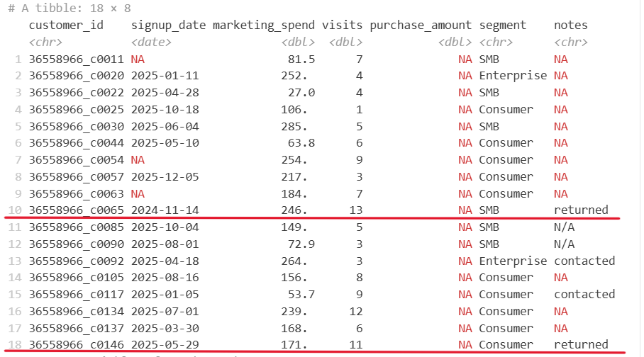
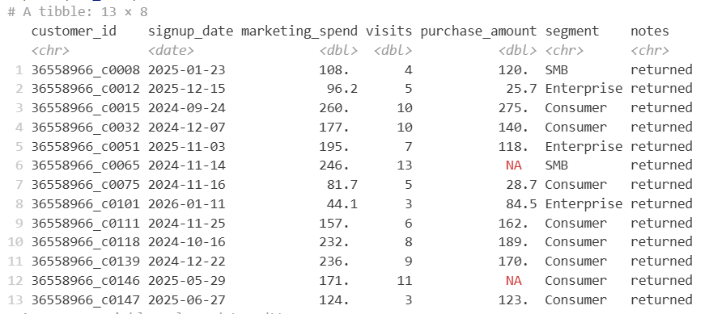
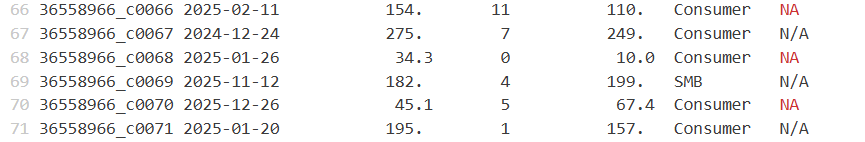
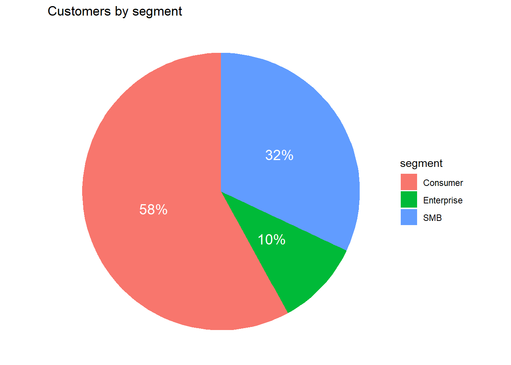
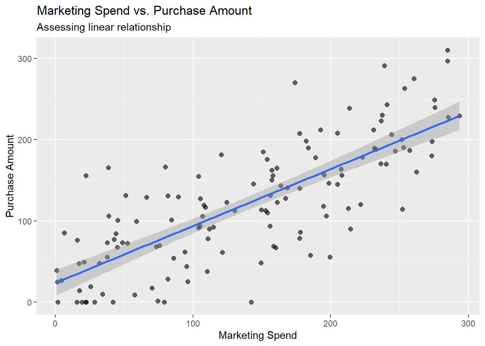

| segment | marketing_expense | marketing_expense_prop | total_visits | total_visits_prop | gross_revenue | gross_revenue_prop |
|---|---|---|---|---|---|---|
| Consumer | 12891.48 | 60.41 | 467 | 57.23 | 9930.40 | 62.04 |
| Enterprise | 2229.61 | 10.45 | 71 | 8.70 | 1423.44 | 8.89 |
| SMB | 6219.11 | 29.14 | 278 | 34.07 | 4653.21 | 29.07 |
Assignment 1 - Marketing campaign report
1. Introduction
For the last quarter, Marketing department had lauched a campaign of personalised marketing, calculate the marketing spent on each customers.
This report will contrast customer acquisition metrics, such as store visits and transaction volumes directly against their associated marketing expenditures to evaluate whether more marketing cost per customer bring about more benefits. It examines a comprehensive cross-section of our user base, evaluating cohorts ranging from new acquisitions to tenured accounts.
The scope of these observations includes market segmentation across individual consumers to enterprise clients.
2. Research objectives
This report analyzes the collected dataset to evaluate the key drivers of financial performance and customer value.
- First, the investigation will focus on answering if there were a correlation exists between Marketing expense and Gross revenue, in order to assess the financial efficiency of our promotional campaigns.
- Afterwards, Customer segments will be examined distinctively to identify differences in Revenue across these segments, identifying the campaign’s most profitable target audiences.
3. Dataset overview
Data cleaning procedures
The dataset is clearly not clean enough to build an analysis pipeline on. Here are the cleaning procedures specifically applied to this dataset:
Step 1: Set up a relative path to the dataset: In order for the report to function well across other devices, the path for the dataset have to be set to relative pathway.
Step 2: Format date field: For datasets involving
date/timefields, the ultimate cleaning process is to set the value of these colunms into appropriate format. We are looking fordateordate/timeformat depending on each dataset. In this case, the dataset originally contained inconsistent date formats within thesignup_datefield. To ensure accurate reporting and time-series analysis, all values have been standardized to a uniform “YYYY-MM-DD format”.Step 3: Clean NA records
Take a look into the dataset, there are 18 records missing a value in the purchase_amount field. Within this subset, two records include the notes = returned (Figure 1). Further investigation indicates that the purchase_amount column tracks gross sales rather than net sales; this is evidenced by numerous other returned records that still retain their original, positive purchase values (Figure 2). Consequently, we cannot accurately impute a zero value for these two entries. Because the remaining null records also lack sufficient context for accurate imputation, all missing values in this field will be left as-is to preserve data integrity.


Also, to maintain consistency across the dataset, manual text entries of N/A within the notes column were standardized to the system’s official missing value format NA (Figure 3).

Overview
This quarterly dataset captures individual customer engagement and financial transactions to evaluate marketing efficiency and customer value. Each row represents one unique customer, detailing metrics relating to their behaviour on the retail website (visits, purchase volume) alongside the specific marketing initiatives they received (ads, coupons, email management fee, and after-sevice).
To quantify revenue generation, the data measures gross sales via the purchase_amount field, while supplementary notes capture specific transactional behaviors such as product returns. Overall, these records provide the necessary foundation for assessing marketing return on investment (ROI) across various customer segments.
Detailed description
Overall, the dataset consists of 8 variables and 150 observations. The only variable have “Date” type is signup_date, three columns have “numeric” type are marketing-spend, visits and purchase_amount; the remaining are recorded under “character”.
Generally, the marketing campaign was successfully engaged on a wide range of customers, from individual consumers to large enterprises. Our website traffic is heavily driven by the B2C market, with individual consumers accounting for nearly 60% of all visitors. SMBs represent a healthy secondary segment at roughly 30% of our customers. However, Enterprise visitors make up just 10% of our traffic, indicating that while our overall commercial reach is solid, our footprint in the high-value enterprise space remains modest.

While our financial metrics broadly align with our customer base proportions, a deeper segmentation analysis reveals a distinct difference in how each group interacts with our campaign.
Consumer: consumers account for the best amount of our base clients, therefor, most of our marketing expense were spent here (60.4%). Yet, this group yielded 62% of our gross sales. This means this customer segment is highly efficient and profitable
SMB: despite consuming only 29.1% of the marketing budget, SMBs generated a massive 34.1% of total site visits. However, this segment only contributed 29.1% of gross revenue. This means the campaign successfully get these customers browsing the website, yet it failed to make them purchasing.
Enterprise: Enterprise clients required 10.4% of our marketing expense to generate 8.7% of site visits and 8.9% of gross revenue. This suggests that digital marketing campaigns may not be the most effective channel for acquiring complex Enterprise clients, who typically require direct sales outreach.
4. Analysis result


tibble [150 × 8] (S3: tbl_df/tbl/data.frame)
$ customer_id : chr [1:150] "36558966_c0001" "36558966_c0002" "36558966_c0003" "36558966_c0004" ...
$ signup_date : Date[1:150], format: "2025-12-03" "2025-12-16" ...
$ marketing_spend: num [1:150] 79.1 16.1 158.5 42.8 15.8 ...
$ visits : num [1:150] 1 2 7 5 2 9 3 4 1 5 ...
$ purchase_amount: num [1:150] 0 76.4 69.1 77.2 0 ...
$ segment : chr [1:150] "Consumer" "Consumer" "Consumer" "Consumer" ...
$ notes : chr [1:150] NA NA NA NA ...
$ clean_date : POSIXct[1:150], format: "2025-12-03" "2025-12-16" ...# A tibble: 6 × 8
customer_id signup_date marketing_spend visits purchase_amount segment notes
<chr> <date> <dbl> <dbl> <dbl> <chr> <chr>
1 36558966_c00… 2025-12-03 79.1 1 0 Consum… <NA>
2 36558966_c00… 2025-12-16 16.1 2 76.4 Consum… <NA>
3 36558966_c00… 2025-06-17 159. 7 69.1 Consum… <NA>
4 36558966_c00… 2025-12-18 42.8 5 77.2 Consum… <NA>
5 36558966_c00… 2024-10-08 15.8 2 0 Consum… <NA>
6 36558966_c00… 2026-01-15 285. 9 297. Consum… <NA>
# ℹ 1 more variable: clean_date <dttm>